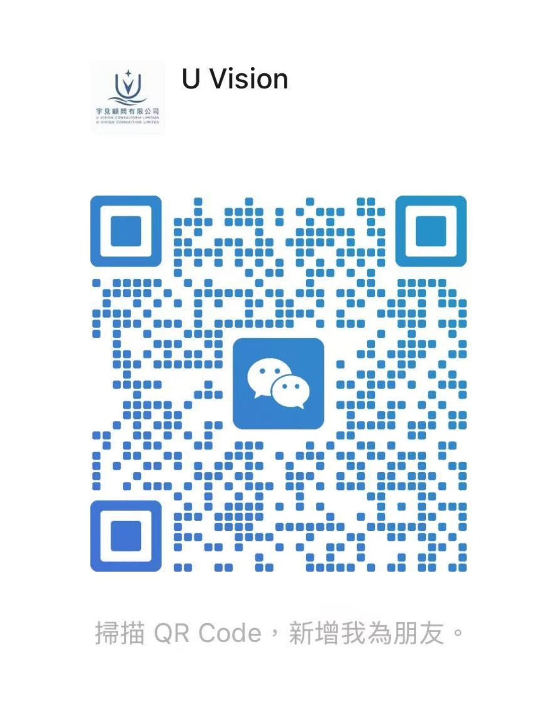

外地做得到，澳門是否行得通？
常見情境
見到外地有成熟的營運模式，想引入澳門，但同一套做法，在本地是否容許？需要牌照、批准，還是調整經營方式？
宇見可以怎樣幫
拆解實際服務及營運流程，對照本地政策與行政要求，找出不能直接照搬的環節，整理需要確認的事項及可調整方向。
先把關鍵條件找出來
構想值得做，仍要核實誰可申請、用甚麼場地、由誰營運，以及須經哪些程序。宇見協助你整理公開要求和現有資料，列明尚待主管部門確認的問題，再比較可調整的方案。
五個常見情境
以下是情境示例，並非已完成的客戶案例。
見到外地有成熟的營運模式，想引入澳門，但同一套做法，在本地是否容許？需要牌照、批准，還是調整經營方式？
拆解實際服務及營運流程，對照本地政策與行政要求，找出不能直接照搬的環節，整理需要確認的事項及可調整方向。
有專業資格及多年工作經驗，想透過人才計劃來澳發展，但唔清楚自己的背景、專業成果及來澳發展安排，是否符合相關要求。
按相關計劃的公開條件，梳理個人背景及證明資料，初步對照資格與要求，找出資料缺口，以及需要向主管部門確認的事項。
已經搵到地方，設備亦有報價，但場地用途、設施條件及申請程序是否配合？擔心簽約投資之後，先發現項目落實唔到。
把業務內容與場地、設備及申請要求逐項對照，整理落實前必須核實的條件，釐清辦理次序，協助判斷現有方案是否需要調整。
一方提供場地、一方持有設備，另一方營運及收費。商業上傾得成，但申請人、持牌人及實際營運者可否由不同公司擔任？
梳理各方角色、設備權屬、收費及責任安排，對照相關申請與營運要求，找出須釐清的環節，協助向主管部門提出具體方案查詢。
政策鼓勵某個行業發展，但自己的項目是否屬於支持範圍？符合資助條件，是否亦代表可以按原定方式營運？
分別梳理政策支持、申請資格及實際營運要求，對照項目的具體內容，找出仍需取得的批准、補足的條件及落地步驟。
下一步
宇見陪你釐清本地要求，看清落地條件，再決定下一步。
聯絡宇見How we help · Business rules and project feasibility
You have a business idea, but may not know whether local rules allow it, which procedures apply, or whether a model seen elsewhere can work here.
Explore five common situationsIdentify the critical conditions
A promising idea still needs answers about who can apply, what premises can be used, who will operate it and which procedures apply. We organise published requirements and the information you have, list questions for the responsible authorities, and compare possible adjustments.
Five common situations
Illustrative situations, not completed client cases.
You have seen a proven model in another market. Can you use the same approach here, or will you need a licence, approval or a different operating model?
Map the service and operating steps against local policies and administrative requirements, identify what cannot be copied directly, and prepare questions and possible adjustments.
You have professional qualifications and years of experience, and want to develop a career in Macao. Are your background, achievements and development plans aligned with the scheme?
Compare your background and evidence against the scheme’s published requirements, identify missing information and list points to confirm with the responsible authority.
You have found premises and received equipment quotations, but are unsure whether the permitted use, facilities and procedures fit your project. You want to check before signing or investing.
Compare the business model with premises, equipment and application requirements, identify conditions to verify before committing, and clarify the order of next steps.
One party provides premises, another owns equipment, and a third operates and collects fees. Can the applicant, licence holder and operator be different companies?
Map the parties’ roles, ownership, payments and responsibilities against application and operating requirements, and prepare a specific enquiry for the responsible authority.
A policy encourages a sector, but is your project within its scope? Would meeting funding criteria also allow you to operate as planned?
Review policy support, application eligibility and operating requirements separately, then identify outstanding approvals, conditions and steps to launch.
Next step
U Vision helps clarify local requirements and launch conditions so you can choose your next step.
Contact U VisionU VISION CONSULTING
可用 WhatsApp、電話或電郵聯絡。請先講業務內容與想釐清的問題，毋須提交身份證或完整商業文件。
Contact us via WhatsApp, phone or email. Tell us about your proposed service and the questions you want clarified; there is no need to send identity documents or full business records at this stage.
用 +853 6679 8555 搜尋加入，或按 QR Code 放大掃描。
Find us using +853 6679 8555 or open the QR code to scan.

 WhatsApp · +853 6679 8555
WhatsApp · +853 6679 8555 Facebook
Facebook